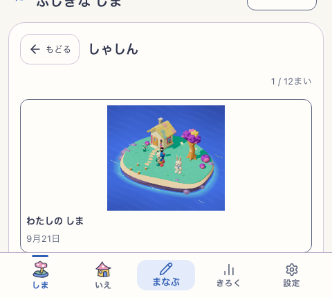
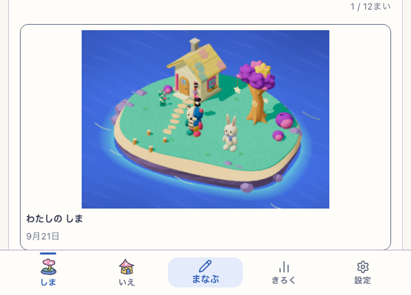
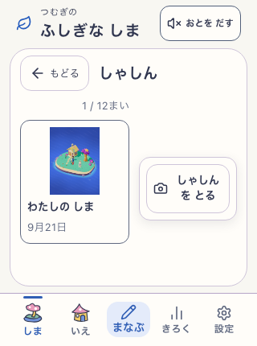
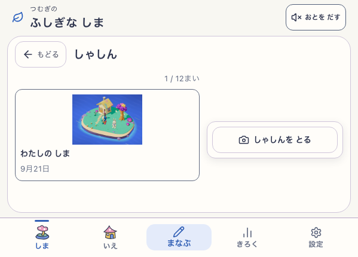
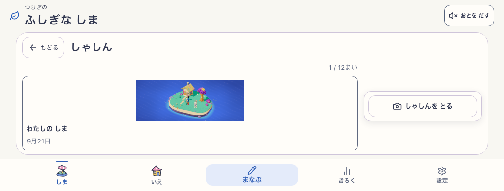

対象: 現行Island、http://127.0.0.1:5198/#/island?view=photos
http://127.0.0.1:5198/#/island?view=photos
修正前: live-82（599×430）で撮影操作 y=388.77–432.77、固定ナビ上端 y=364.41。44pxの操作全体がナビの後ろに入り、タップできない。live-83（480×430）でも同じ幾何を再現。
live-82
live-83
修正後: 高さ430px以下では幅にかかわらずアルバム一覧を独立スクロールにし、撮影操作を隣の列へ配置。320×430・480×430・599×430・600×430・1024×390で操作が表示領域内に入り、最小44pxを維持。
回帰検査: live-84 は7 viewport、193 route/action checks、131 captures、page error 0。runtime revision development-local、version development-local:60d95334-58f8-4594-b548-c113c90cad1c、app root Island=true / NatureTown=false、configured delivery snap-root-v1、Island delivery mystic-island-v1、visual candidate mystic-island-shore-garden-v18、reduced motion、service workerなし。QA profile/fixtureは隔離context終了時に破棄。
live-84
development-local
development-local:60d95334-58f8-4594-b548-c113c90cad1c
snap-root-v1
mystic-island-v1
mystic-island-shore-garden-v18
標準回帰: live-85 の既定3 viewport（390×844 / 768×1024 / 599×430）もPASS。81 checks、55 captures、page error 0。599×430で写真CTAと主要3入口の可視性を継続検査。live-85 report
live-85
480px修正前report · 599px修正前report · live-84修正後report




